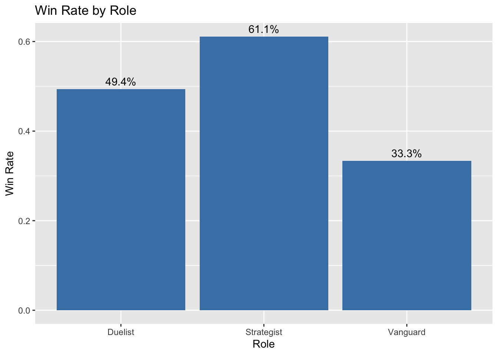
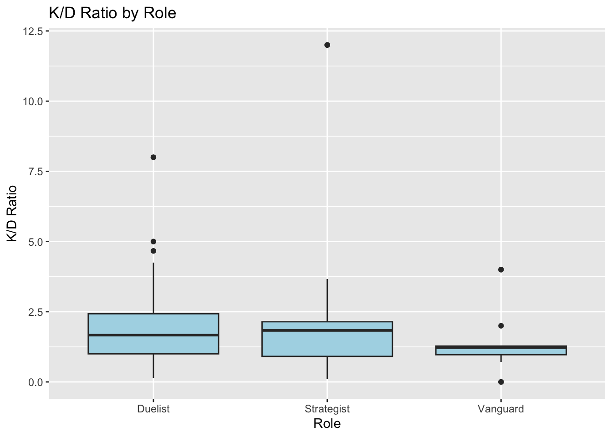
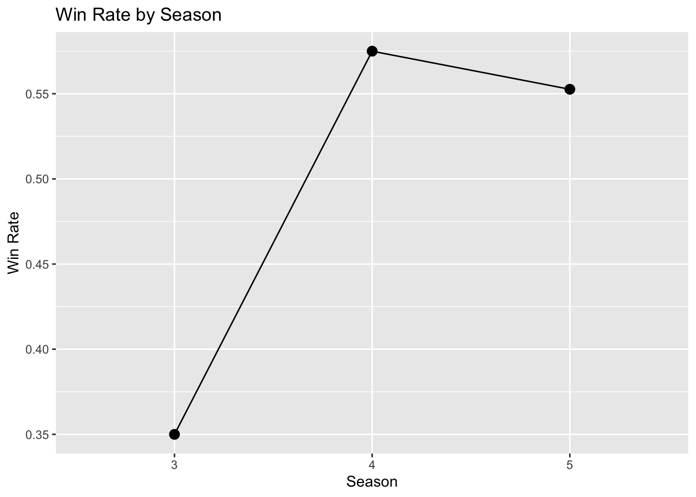
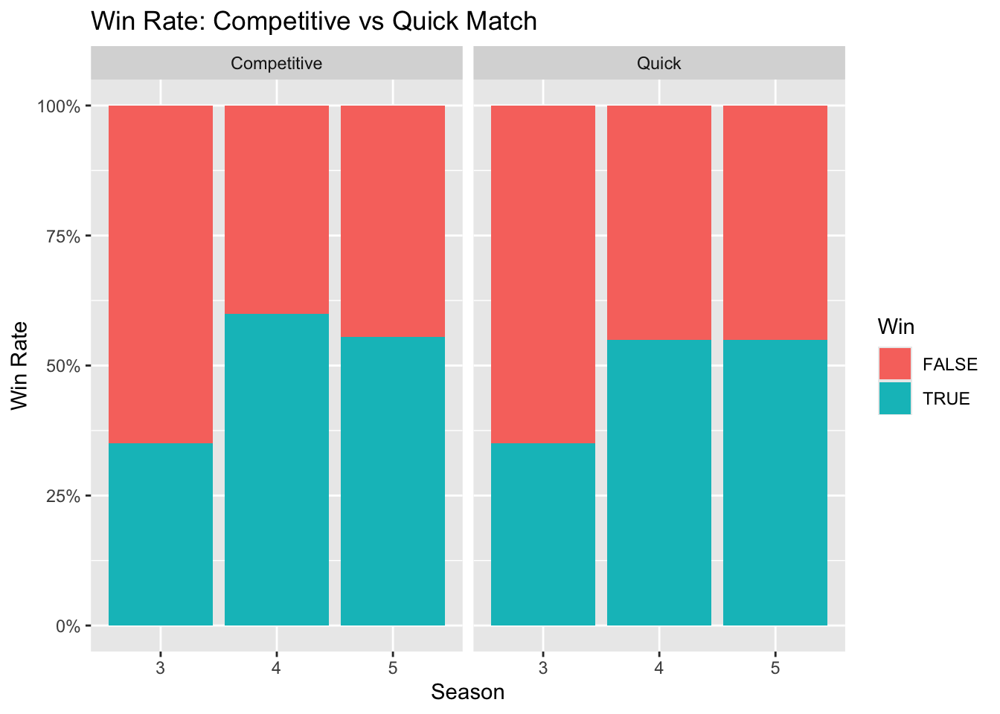
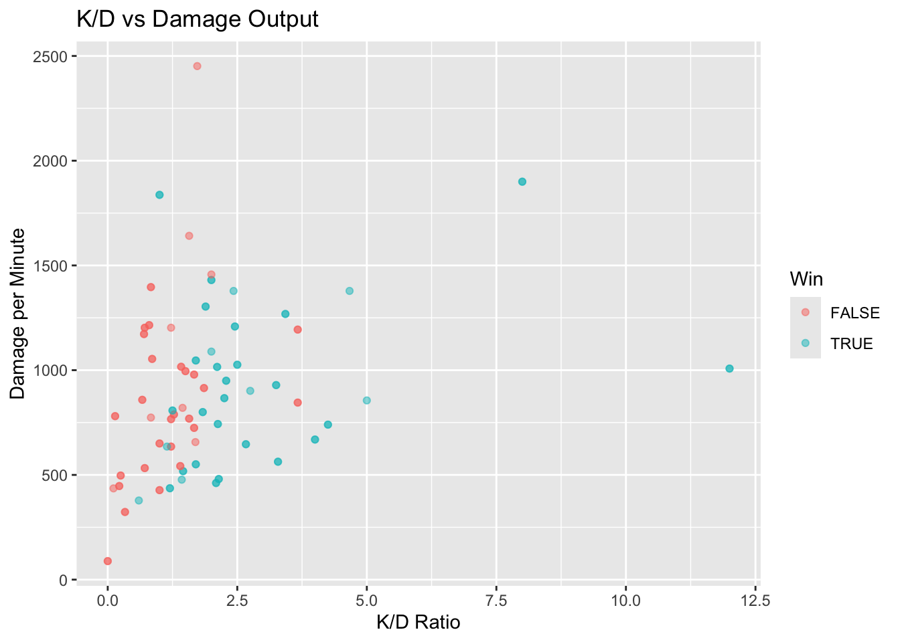
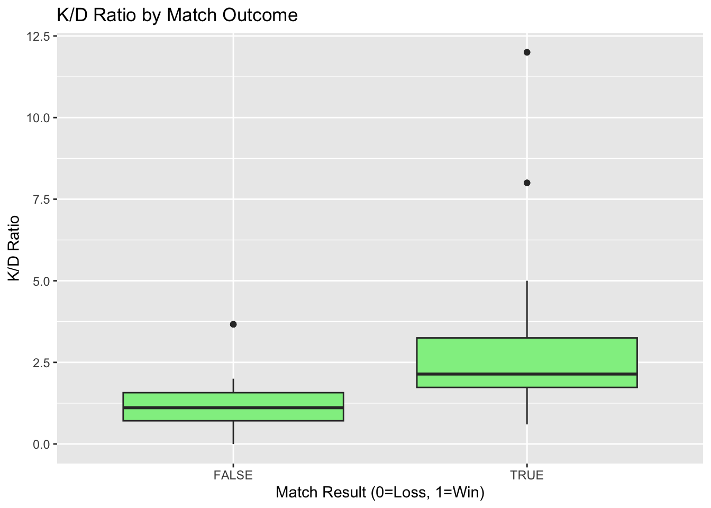
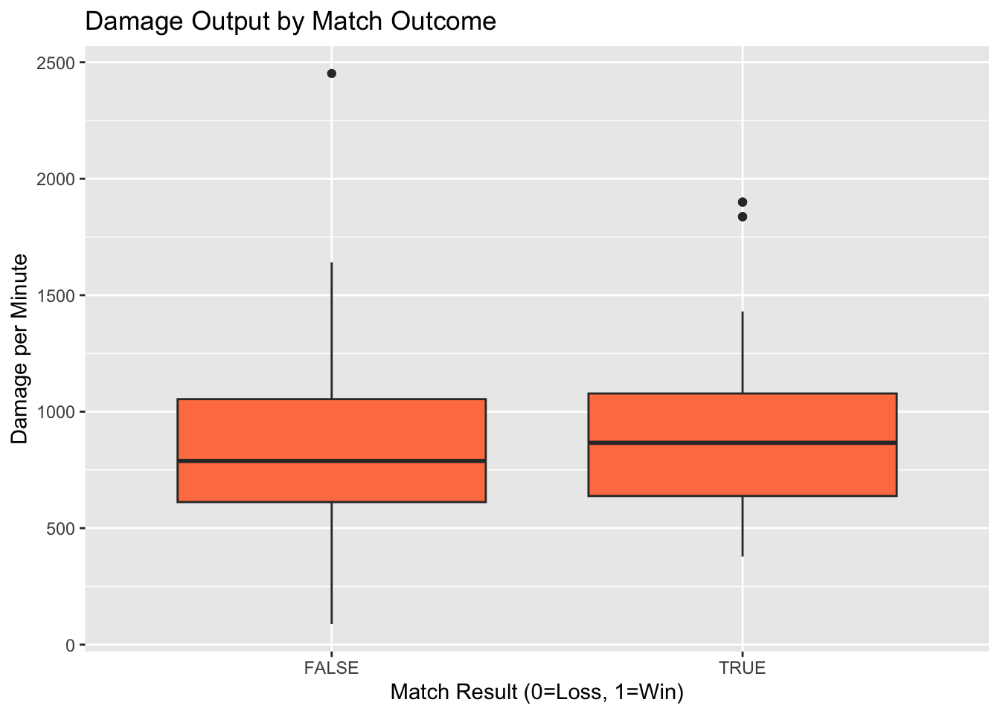
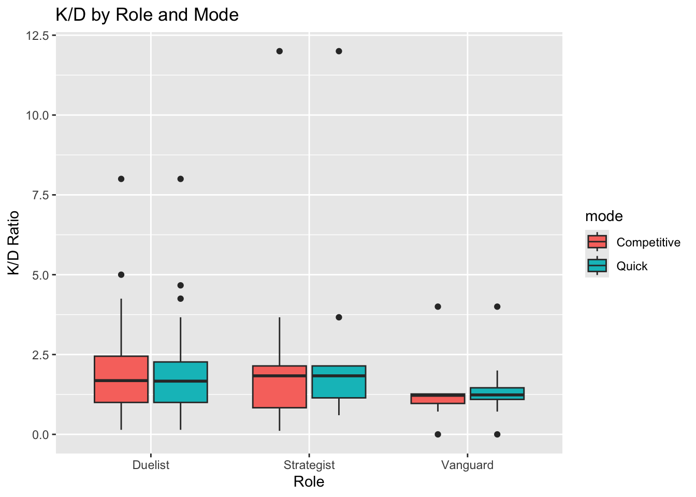

library(tidyverse)
library(here)
library(dplyr)
library(jsonlite)
library(httr)
library(RCurl)
library(tibble)Marvel Rivals Exploration
Libraries
Games from Season 3-5 for both QM and C
Created functions and for-loop to grab seasons 3-5 for Marvel Rival for my own status.
api_key <- "eb86e90ed5b97e7e59b61602423419d9477d9d7f7481901ad3cc1b9ad9124271"
USERNAME <- "kpil11"
# Define the function first
get_matches_by_mode <- function(username, season, game_mode, api_key) {
Sys.sleep(2) # Delay to avoid rate limits
response <- GET(
url = paste0("https://marvelrivalsapi.com/api/v1/player/", username, "/match-history"),
query = list(
season = season,
game_mode = game_mode
),
add_headers("x-api-key" = api_key)
)
if (status_code(response) == 200) {
data <- fromJSON(content(response, "text", encoding = "UTF-8"))
return(data$match_history)
} else {
warning(paste("Error:", status_code(response)))
return(NULL)
}
}
# For - loop
seasons <- 3:6
game_modes <- c(0, 1)
all_data <- list()
for (season in seasons) {
for (mode in game_modes) {
mode_name <- ifelse(mode == 1, "Competitive", "Quick")
cat("Fetching Season", season, "-", mode_name, "...\n")
matches <- get_matches_by_mode(USERNAME, season, mode, api_key)
if (!is.null(matches)) {
df <- bind_rows(matches)
df$season <- season
df$mode <- mode_name
all_data[[paste(season, mode_name)]] <- df
}
Sys.sleep(5)
}
}Fetching Season 3 - Quick ...
Fetching Season 3 - Competitive ...
Fetching Season 4 - Quick ...
Fetching Season 4 - Competitive ...
Fetching Season 5 - Quick ...
Fetching Season 5 - Competitive ...
Fetching Season 6 - Quick ...
Fetching Season 6 - Competitive ...all_season_combined <- bind_rows(all_data)
# Write CSV
#write.csv(all_season_combined, here("output/all_season_df.csv"), row.names = FALSE)List of all the heroes from Marvel Rivals Website
# Add hero status
headers <- c("x-api-key" = "eb86e90ed5b97e7e59b61602423419d9477d9d7f7481901ad3cc1b9ad9124271")
res <- getURL(
"https://marvelrivalsapi.com/api/v1/heroes",
.opts = list(httpheader = headers, followlocation = TRUE)
)
heroes_df <- fromJSON(res, flatten = TRUE) %>%
as_tibble()Data Wrangle
View Data
head(all_season_combined)Rename and replace the column names to have a simple naming convention
Using Transmute from the dplyr package
clean_season <- all_season_combined %>%
transmute(
map_id = match_map_id,
duration = match_play_duration,
season,
mode,
timestamp = match_time_stamp,
kills = match_player$kills,
deaths = match_player$deaths,
assists = match_player$assists,
is_win = match_player$is_win$is_win,
hero_name = match_player$player_hero$hero_name,
hero_type = match_player$player_hero$hero_type,
hero_image = match_player$player_hero$hero_portrait,
total_hero_damage = match_player$player_hero$total_hero_damage,
total_damage_taken = match_player$player_hero$total_damage_taken,
total_hero_healing = match_player$player_hero$total_hero_heal
)
# Add role mapping
hero_roles <- data.frame(
hero_name = c("phoenix", "captain america", "the punisher", "venom",
"star-lord", "moon knight", "iron man", "hulk", "loki",
"mantis", "luna snow", "rocket raccoon", "jeff the land shark",
"winter soldier", "angela", "gambit"),
role = c("Duelist", "Vanguard", "Duelist", "Vanguard",
"Duelist", "Duelist", "Duelist", "Vanguard", "Strategist",
"Strategist", "Strategist", "Strategist", "Strategist",
"Duelist", "Vanguard", "Strategist")
)
# Join Hero Roles onto new dataframe
clean_season <- clean_season %>%
left_join(hero_roles, by = "hero_name")
# Check Characters used
unique(clean_season$hero_name) [1] "phoenix" "the punisher" "captain america"
[4] "star-lord" "venom" "moon knight"
[7] "jeff the land shark" "winter soldier" "angela"
[10] "gambit" # Create list of your heroes - From Characters Used
my_heroes <- c("phoenix", "the punisher", "captain america", "star-lord",
"venom", "moon knight", "jeff the land shark", "winter soldier",
"angela", "gambit")
# Filter heroes_df to only your heroes
heroes_lookup <- heroes_df %>%
filter(tolower(name) %in% my_heroes) %>% # use tolower() in case API has different case
select(
hero_name = name,
real_name = real_name,
difficulty = difficulty
) %>%
mutate(hero_name = tolower(hero_name)) # make sure it matches clean_season
# Join to clean_season
clean_season <- clean_season %>%
left_join(heroes_lookup, by = "hero_name")
# Check if all matched
clean_season %>%
filter(is.na(difficulty)) %>%
distinct(hero_name) hero_name
1 angela
2 gambitExploration
Do I perform better as DPS, Tank, or Support?
# Win rate by role
role_stats <- clean_season %>%
group_by(role) %>%
summarise(
games = n(),
win_rate = mean(is_win == 1)
)
ggplot(role_stats, aes(x = role, y = win_rate)) +
geom_col(fill = "steelblue") +
geom_text(aes(label = paste0(round(win_rate*100, 1), "%")), vjust = -0.5) +
labs(x = "Role", y = "Win Rate", title = "Win Rate by Role")
# K/D distribution by role
ggplot(clean_season, aes(x = role, y = kills / (deaths + 1))) +
geom_boxplot(fill = "lightblue") +
labs(x = "Role", y = "K/D Ratio", title = "K/D Ratio by Role")
Am I getting better or plateauing?
Should this be the end of my gaming career?
# Winning rate across seasons
season_progression <- clean_season %>%
group_by(season) %>%
summarise(win_rate = mean(is_win == 1))
ggplot(season_progression, aes(x = factor(season), y = win_rate, group = 1)) +
geom_line() +
geom_point(size = 3) +
labs(x = "Season", y = "Win Rate", title = "Win Rate by Season")
# Win rate by season and mode
ggplot(clean_season, aes(x = factor(season), fill = factor(is_win))) +
geom_bar(position = "fill") +
facet_wrap(~mode) +
scale_y_continuous(labels = scales::percent) +
labs(x = "Season", y = "Win Rate",
title = "Win Rate: Competitive vs Quick Match",
fill = "Win")
Kill/ Death Comparisons
# Create metrics
clean_season <- clean_season %>%
mutate(
# Kill/death ratio
kd_ratio = kills / (deaths + 1),
damage_per_min = total_hero_damage / (duration / 60)
)
# Scatter: K/D vs Damage
ggplot(clean_season, aes(x = kd_ratio, y = damage_per_min, color = factor(is_win))) +
geom_point(alpha = 0.5) +
labs(x = "K/D Ratio", y = "Damage per Minute",
title = "K/D vs Damage Output", color = "Win")
# Boxplot comparison
ggplot(clean_season, aes(x = factor(is_win), y = kd_ratio)) +
geom_boxplot(fill = "lightgreen") +
labs(x = "Match Result (0=Loss, 1=Win)", y = "K/D Ratio",
title = "K/D Ratio by Match Outcome")
ggplot(clean_season, aes(x = factor(is_win), y = damage_per_min)) +
geom_boxplot(fill = "coral") +
labs(x = "Match Result (0=Loss, 1=Win)", y = "Damage per Minute",
title = "Damage Output by Match Outcome")
# K/D by role, colored by mode
ggplot(clean_season, aes(x = role, y = kd_ratio, fill = mode)) +
geom_boxplot() +
labs(x = "Role", y = "K/D Ratio", title = "K/D by Role and Mode")
V. Answer questions
After completing the above steps, answer the following questions:
- What have you learned about your data? Have any potentially interesting patterns emerged? Point to specific visualizations that you created as you describe your findings.
After joining and cleaning the data, I’ve discovered some interesting patterns about my gameplay. Each season dataset contains roughly 20 matches across seasons 3-6, split between Quick Match and Competitive modes. I discovered, - Mode preference: I play significantly more Quick Match than Competitive ([X%] vs [Y%] of total games). Quick Match feels lower-pressure since rank isn’t affected, making it easier to experiment with new heroes or play casually. - Role distribution: I heavily favor Duelist and Strategist heroes compared to Vanguard. Win rate patterns: I barely started getting into the video game maybe towards the end of season 3. I really started playing more intensily for season 4 and season 5. For season 6 its still TBD. Performance gap: Competitive win rate is notably lower than Quick Match, likely due to higher opponent skill and the pressure of ranked play.
- In FPM #1, you outlined some questions that you wanted to answer using these data. Have you made any strides towards answering those questions? If yes, how so? If no, what next steps do you need to take (e.g. I need to create X plot type, I still need to track down Y data, I need to restructure existing data so that you can visualize it in Z ways, etc.)? Have any new questions emerged?
- I’ve pivoted from my FPM #1 dataset to focus on Marvel Rivals match data, which aligns better with my interests and expertise in the game.
- Important Side Note: This dataset contains matches from both me and my brother, as we share the same game profile. This introduces bias since I can’t isolate individual performance, but it still provides insights into how “we” perform with different heroes and roles.
My questions would be: Goal/Infographic Purpose: - “Analyze my personal Marvel Rivals performance to identify which heroes, roles, and playstyles maximize my win rate across seasons 3-6.” - Three Questions: - Which hero role (Duelist/Vanguard/Strategist) do I win most consistently with? - Has my performance improved from Season 3 to Season 6, or have I plateaued? - Does my K/D ratio or damage output better predict match wins?
- What challenges do you foresee encountering with your data? These can be data wrangling and / or visualization challenges.
- I may not have enough data to have a set answer, but it could lead to some interesting findings. Right now, I only have data up until season 5. Season 6 is ending next week, and I am positive it will add more information to wrangle and create more visualizations with a few new characters. Some data limitations are:
- Sample size: Currently have data through Season 5 only. Season 6 ends next week, which will add more matches and new hero releases to the dataset.
- Mixed players: Cannot separate my performance from my brother’s since we share one profile (this means findings represent “our collective” performance rather than individual skill)
- Uneven distribution: Some heroes have very few games played (<5), making their win rates unreliable
- Competitive sample: Likely have fewer Competitive matches, which could make mode comparisons statistically weak